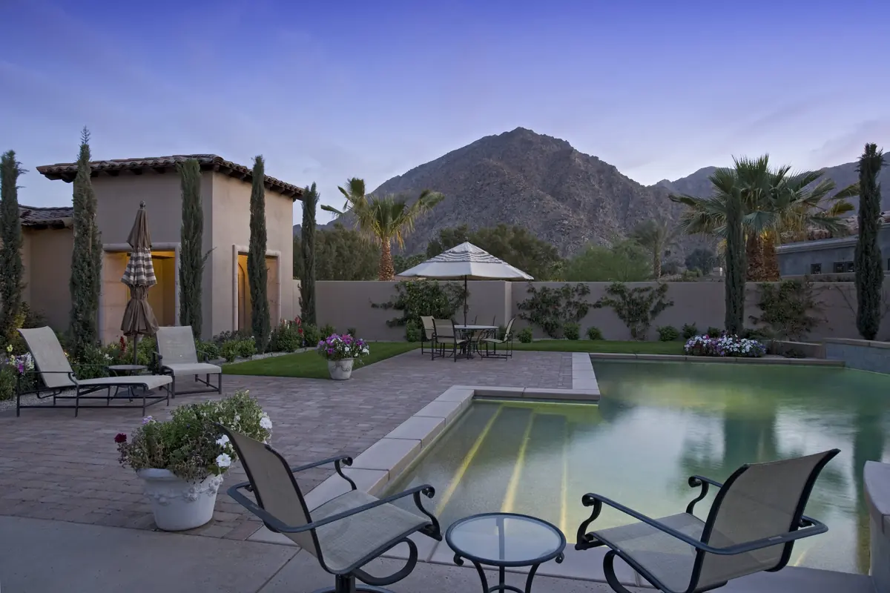

Arcadia, Phoenix
Citrus-grove roots, mid-century ranch homes, and estate-sized lots beneath Camelback Mountain — Arcadia is one of the Valley's most requested addresses.
$1.26M–$1.32M
Median Sale Price56–72
Typical Days on Market$773K–$3M+
Detached Home Range95.7%
Sale-to-List RatioEstate Lots With Historic Character
Arcadia sits north of the Arizona Canal and south of Camelback Mountain, roughly between 44th Street and Scottsdale Road — its historic roots extend into what is now Scottsdale. The neighborhood began as a rural estate community of large citrus-grove parcels, and that legacy still shapes it today: original mid-century ranch homes sit alongside custom rebuilds, on lots far larger than typical Phoenix subdivisions.
Attached homes — townhouses and condos — run from the low $300,000s to the mid-$500,000s, while detached single-family homes span roughly $773,000 to $3 million or more, with the overall market median near $1.3 million. Homes typically spend 56 to 72 days on market and sell close to list price, reflecting steady, disciplined demand rather than frenzied bidding.
Between the Mountain and the Canal
Camelback Mountain
One of the nation's top hiking destinations sits at Arcadia's doorstep, with the Echo Canyon and Cholla trailheads both minutes from most homes.
Arizona Canal Trail & Arizona Falls
A free public path for biking, jogging, and walking runs the length of the neighborhood, passing the Arizona Falls public art and hydro installation.
Camelback Road & Indian School Dining
Some of Phoenix's best-regarded restaurants line these two corridors, with the Biltmore's retail and dining district and Old Town Scottsdale's 90-plus restaurants both a short drive away.
Centrally Positioned
Arcadia's location gives residents quick access to Downtown Phoenix's business and cultural core, Scottsdale's employment centers, and Sky Harbor International Airport — a rare combination of historic character and central convenience.
Arcadia Real Estate FAQ
What is the median home price in Arcadia, Phoenix?
As of 2026, the median sale price in Arcadia is roughly $1.26 to $1.32 million. Attached homes such as townhouses and condos range from the low $300,000s to the mid-$500,000s, while detached single-family homes typically run from about $773,000 to $3 million or more.
Where is Arcadia located and what are its boundaries?
Arcadia sits north of the Arizona Canal and south of Camelback Mountain, roughly between 44th Street and Scottsdale Road, straddling the line between Phoenix and Scottsdale.
What makes Arcadia different from other Phoenix neighborhoods?
Arcadia grew out of large citrus-grove estate lots, giving it a mix of original mid-century ranch homes and custom rebuilds on generous lots, unlike the uniform tract development found elsewhere in the Valley. It also offers direct access to Camelback Mountain hiking and some of Phoenix's most acclaimed restaurants.
Explore More Communities



Curious what your Arcadia home is worth?
Elizabeth can walk you through recent comparable sales in your exact block.